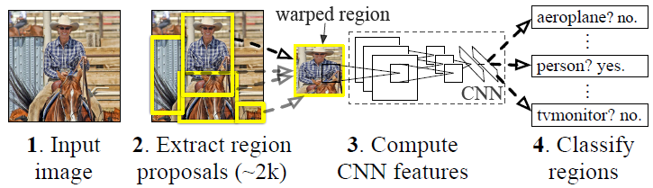
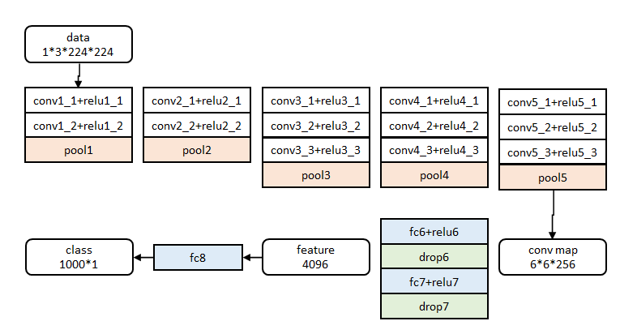

RCNN算法详解¶
Region CNN(RCNN)可以说是利用深度学习进行目标检测的开山之作.作者Ross Girshick多次在PASCAL VOC的目标检测竞赛中摘桂,2010年更带领团队获得终身成就奖.
目标检测中的两个关键问题:
- 速度:经典的目标检测算法使用滑动窗法依次判断所有可能的区域.本文则预先提取一系列较可能是物体的候选区域,之后仅在这些候选区域上提取特征,进行判断
- 训练集:一个较大的识别库(ImageNet ILSVC 2012),标定每张图片中物体的类别,一千万图像,1000类;一个较小的检测库(PASCAL VOC 2007),标定每张图片中,物体的类别和位置,一万图像,20类
流程¶
- 一张图像生成
1K~2K个候选区域 - 对每个候选区域,使用深度网络提取特征
- 特征送入每一类的SVM分类器,判别是否属于该类
- 使用回归器精细修正候选框位置

候选区域生成¶
使用了Selective Search方法从一张图像生成约2000-3000个候选区域.基本思路如下:
- 使用一种过分割手段,将图像分割成小区域
- 查看现有小区域,合并可能性最高的两个区域.重复直到整张图像合并成一个区域
- 输出所有曾经存在过的区域,所谓候选区域
候选区域生成和后续步骤相对独立,实际可以使用任意算法进行.
合并规则:
- 颜色(颜色直方图)相近的
- 纹理(梯度直方图)相近的
- 合并后总面积小的
- 合并后总面积在其BBOX中所占比例大的
第3条保证合并操作的尺度较为均匀,避免一个大区域陆续吃掉其他小区域.第四条保证合并后形状规则.上述四条规则只涉及区域的颜色直方图,纹理直方图,面积和位置.合并后的区域特征可以直接由子区域特征计算而来,速度较快.
特征提取¶
使用深度网络提取特征之前,首先把候选区域归一化成同一尺寸227x227.此处有一些细节可做变化:外扩的尺寸大小,形变时是否保持原比例,对框外区域直接截取还是补灰.
预训练¶
网络借鉴Hinton 2012年在Image Net上的分类网络.提取的特征为4096维,之后送入一个4096->1000的全连接fc层进行分类,学习率0.01.训练数据使用ILVCR 2012的全部数据进行训练,输入一张图片,输出1000维的类别标号.
调优训练¶
同样使用上述网络,最后一层换成4096->21的全连接网络.学习率0.001,每一个batch包含32个正样本(属于20类)和96个背景.训练数据使用PASCAL VOC 2007的训练集,输入一张图片,输出21维的类别标号,表示20类+背景.考察一个候选框和当前图像上所有标定框重叠面积最大的一个.如果重叠比例大于0.5,则认为此候选框为此标定的类别,否则认为此候选框为背景.
类别判断¶
- 正样本:本类的真值标定框
- 负样本:考察每一个候选框,如果和本类所有标定框的重叠都小于0.3,认定其为负样本
位置精修¶
目标检测问题的衡量标准是重叠面积:许多看似准确的检测结果,往往因为候选框不够准确,重叠面积很小.故需要一个位置精修步骤:
- 回归器:对每一类目标,使用一个线性回归器进行精修,正则项
λ=10000.输入为深度网络的4096维特征,输出为xy方向的缩放和平移 - 训练样本:判定为本类的候选框中和真值重叠面积大于0.6的候选框
Fast RCNN¶
继2014年的RCNN之后,Ross Girshick在15年推出Fast RCNN,构思精巧,流程更为紧凑,大幅提升了目标检测的速度.
RCNN使用以下四步实现目标检测:
- 在图像中确定约
1000-2000个候选框 - 对于每个候选框内图像块使用深度网络提取特征
- 对候选框中提取出的特征使用分类器判别是否属于一个特定类
- 对于属于某一特征的候选框用回归器进一步调整其位置
改进的Fast RCNN:
- 测试时速度慢:RCNN一张图像内候选框之间大量重叠,提取特征操作冗余;Fast RCNN将整张图像归一化后直接送入深度网络,在邻接时,才加入候选框信息,在末尾的少数几层处理每个候选框
- 训练时速度慢:RCNN一张图像内候选框之间大量重叠,提取特征操作冗余;Fast RCNN将一张图像送入网络,紧接着送入从这幅图像上提取出的候选区域,这些候选区域的前几层特征不需要再重复计算
- 训练所需空间大:RCNN中独立的分类器和回归器需要大量特征作为训练样本;Fast RCNN把类别判断和位置精调统一用深度网络实现,不再需要额外存储
特征提取¶
图像归一化为224×224直接送入网络,前五阶段是基础的conv+relu+pooling形式,在第五阶段结尾输入P个候选区域(图像序号×1+几何位置×4).
roi_pool层的测试(forward)¶
roi_pool层将每个候选区域均匀分成M×N块,对每块进行max pooling.将特征图上大小不一的候选区域转变为大小统一的数据,送入下一层.
网络参数训练¶
网络除去末尾部分如下图,在ImageNet上训练1000类分类器.结果参数作为相应层的初始化参数:

其余参数随机初始化.
在调优训练时,每一个mini-batch中首先加入N张完整图片,而后加入从N张图片中选取的R个候选框.这R个候选框可以复用N张图片前5个阶段的网络特征.实际选择N=2,R=128.
训练数据N张完整图片以50%概率水平翻转,R个候选框的构成方式:
- 前景:25%,与某个真值重叠在
[0.5,1]的候选框 - 背景:75%,与真值重叠的最大值在
[0.1,0.5)的候选框
分类与位置调整¶
第五阶段的特征输入到两个并行的全连层中(multi-task):
cls_score层用于分类,输出K+1维数组p,表示属于K类和背景的概率.bbox_pred层用于调整候选区域位置,输出4xK维数组t,表示分别属于K类时,应该平移缩放的参数.
Faster RCNN¶
从RCNN到fast RCNN,再到faster RCNN,目标检测的四个基本步骤候选区域生成,特征提取,分类,位置精修终于被统一到一个深度网络框架之内.所有计算没有重复,完全在GPU中完成,大大提高了运行速度.
faster RCNN可以简单地看做区域生成网络+fast RCNN的系统,用区域生成网络代替fast RCNN中的Selective Search方法.这个系统中的三个问题:
- 如何设计区域生成网络
- 如何训练区域生成网络
- 如何让区域生成网络和fast RCNN网络共享特征提取网络
区域生成网络:结构¶
基本设想是在提取好的特征图上对所有可能的候选框进行判别.由于后续还有位置精修步骤,所以候选框实际比较稀疏.

原始特征提取(上图灰色方框)包含若干层conv+relu,直接套用ImageNet上常见的分类网络即可.
额外添加一个conv+relu层,输出51x39x256维特征.
特征可以看做一个尺度51x39的256通道图像,对于该图像的每一个位置,考虑9个可能的候选窗口三种面积{128^2,256^2,512^2}x三种比例{1:1,1:2,2:1}.这些候选窗口称为anchors.下图示出51x39个anchor中心,以及9种anchor示例:

分类层cls_score输出每一个位置上9个anchor属于前景和背景的概率,窗口回归层bbox_pred输出每一个位置上9个anchor对应窗口应该平移缩放的参数.对于每一个位置来说,分类层从256维特征中输出属于前景和背景的概率,窗口回归层从256维特征中输出4个平移缩放参数.
就局部来说,这两层是全连接网络;就全局来说,由于网络在所有位置51x39个的参数相同,所以实际用尺寸为1×1的卷积网络实现.
实际代码中,将51x39x9个候选位置根据得分排序,选择最高的一部分,再经过Non-Maximum Suppression获得2000个候选结果之后才送入分类器和回归器.所以Faster-RCNN和RCNN,Fast-RCNN一样属于2-stage的检测算法.
区域生成网络:训练¶
考察训练集中的每张图像:
- 对每个标定的真值候选区域,与其重叠比例最大的anchor记为前景样本
- 对
[1]剩余的anchor,如果其与某个标定重叠比例大于0.7,记为前景样本;如果其与任意一个标定的重叠比例都小于0.3,记为背景样本 - 对
[1],[2]剩余的anchor弃去不用 - 跨越图像边界的anchor弃去不用
原始特征提取网络使用ImageNet的分类样本初始化,其余新增层随机初始化.每个mini-batch包含从一张图像中提取的256个anchor,前景背景样本1:1.前60K迭代,学习率0.001,后20K迭代,学习率0.0001.
momentum设置为0.9,weight decay设置为0.0005.